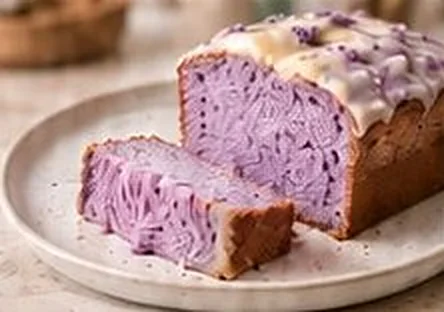
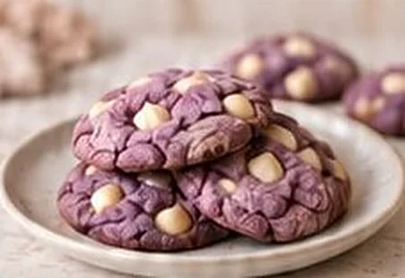
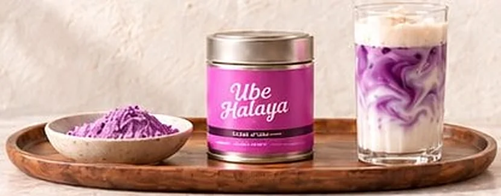

Boisson
Boisson
5 min 1 verre Facile
Latte signature, mousse vanille
Le classique : chaud ou glacé, marbré de violet et coiffé d’une mousse légère.
Livraison offerte dès 45 €
Un peu de violet dans la cuisine
Des idées simples pour profiter de votre canette, du latte du matin au goûter du dimanche.
Boisson
5 min 1 verre Facile
Le classique : chaud ou glacé, marbré de violet et coiffé d’une mousse légère.

Pâtisserie1 h 05 8 parts Facile
Un cake moelleux au cœur violet, parfait pour le goûter du dimanche.

Pâtisserie30 min 12 cookies Facile
Croustillants autour, fondants au centre, et d’un violet qui ne passe pas inaperçu.
Boisson
Le classique d’Éclat d’Ubé. Chaud en hiver, sur glaçons en été, toujours marbré de violet.
Pâtisserie
Un cake marbré et moelleux dont chaque tranche révèle ses volutes violettes. Idéal pour le goûter.
Pâtisserie
Des cookies à l’ube et au chocolat blanc, croustillants autour et fondants au centre.

L’ingrédient clé
50 g de poudre d’ube : de quoi préparer jusqu’à 25 lattes, ou 4 cakes à l’ube.
17,90 €